<dialog id="dialog" style="padding: 0;">
    <webview id="container" width="100vw" height="100vh" src="plugin:/plugin-data/index.html?isPhotoshopPlugin=yeah"></webview>
</dialog>

<div style="width: 100vw; height: 100vh; display: flex; flex-direction: column; align-items: center; justify-content: center;">
    <button id="launchBtn">New SuperBloom Layer</button>
    <button id="editSelectedBtn">Edit Selected Layer</button>
</div>



<div style="position: fixed; bottom: 0; left: 0; width: 100vw; padding: 10px; box-sizing: border-box; text-align: center; color: var(--primary-color);">
    <a href="https://lunalgraphics.com/about-superbloom/photoshop" target="_blank">Learn more</a>
    <br />
    <a href="https://lunalgraphics.com/bugreport?app=SuperBloom&platform=Desktop&os=Photoshop%20Plugin" target="_blank">Report a bug</a>
    <br />
    &copy; 2025 Yikuan Sun
</div>

<script src="./index.js"></script>

<style>
    :root {
        --primary-color: #E8E8E8; /* default colors are for dark themes */
    }
    @media (prefers-color-scheme: lightest), (prefers-color-scheme:light) {
        :root {
            --primary-color: #181818; /* override for light themes */
        }
    }
</style>